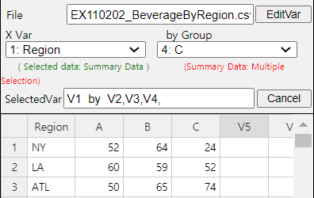
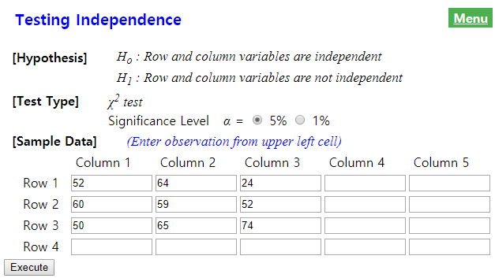
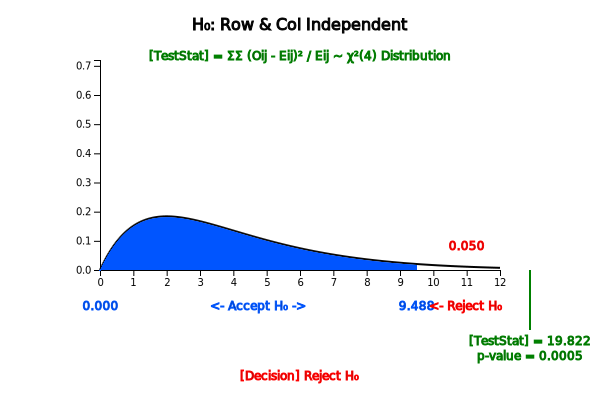

The contingency table or cross table discussed in Chapter 4 was a table that placed the possible values of
two categorical variables in rows and columns, respectively, and examined frequencies of each cell in which the
values of the two variables intersect. If this contingency table is for sample data taken from a population, it
is possible to predict what would be the contingency table of the population. The test for the contingency table
is usually an analysis of the relation between two categorical variables and it can be divided into the
independence test and homogeneity test according to the sampling method for obtaining the data.
11.2.1 Independence Test
The independence test of the contingency table is to investigate whether two categorical variables are
independent when samples are extracted from one population. Consider the independence test with the following
example.
Example 11.2.1
In order to investigate whether college students who are wearing glasses are independent by gender,
a sample of 100 students was collected and its contingency table was prepared as follows:
Table 11.2.1 Wearing glasses by gender
Wear Glasses
No Glasses
Total
Men
40
10
50
Women
20
30
50
Total
60
40
100
[Ex] ⇨ eBook ⇨ EX110201_GlassesByGender.csv.
1) Using 『eStat』, draw a line graph of the use of eyeglasses by men and women.
2) Test the hypothesis at 5% of the significance level to see if the gender variable and the wearing of
glasses are independent or related to each other.
3) Check the result of the independence test using 『eStatU』.
Answer
1) Enter data in 『eStat』 as shown in <Figure 11.2.1>.
<Figure 11.2.1> Data input
Select 'Line Graph' icon from the main menu. If you click variables ‘Gender’, ‘Glasses’, ‘NoGlasses’
one by one, then a line graph as shown in <Figure 11.2.2> will appear in the Graph Area. If you look
at the line graph, you can see that the ratio of wearing glasses for men and women are different. For men,
there are many students who do not wear glasses (80% of men) and for women, 60% of women do. In such cases,
the gender variable and the wearing of glasses are considered related. As such, when two variables are
related, two lines of the line graph intersect to each other.
<Figure 11.2.2> Line graph of wearing glasses by gender
2) If two variables are not related (i.e., if the two variables are independent of each other), the
contingency table in Table 11.2.1 will show that the proportion of wearing glasses by men or women is equal
to 60% which is the proportion of all students wearing glasses. In other words, if two variables are
independent, the contingency table should be as follows:
Table 11.2.2 Contingency table when gender and wearing glasses are independent
Wear Glasses
No Glasses
Total
Men
30
20
50
Women
30
20
50
Total
60
40
100
If there is little difference between the observed contingency table and the contingency table in the case
of independence, two categorical variables are said to be independent of each other. If the differences are
very large, two categorical variables are related to each other. The independence test is a statistical
method for determining that two categorical variables of the population are independent of each other by
using the observed contingency table obtained from the sample. The independent test uses the chi-square
distribution and the hypothesis is as follows:
\(\small H_0 :\) Two variables of the contingency table are independent of each other.
\(\small H_1 :\) Two variables of the contingency table are related.
The test statistic for testing this hypothesis utilizes the difference between the observed frequency of
the contingency table in the sample and the expected frequency of the contingency table when two variables
are assumed to be independent which is similar to the goodness of fit test. The test statistic in this
example is as follows:
This test statistic follows a chi-square distribution with \((r-1)(c-1)\) degrees of freedom where \(r\)
is the number of rows (number of possible values of row variable) and \(c\) is the number of columns
(number of possible values of column variable). Therefore, the decision rule to test the hypothesis is as follows:
'If \(\chi_{obs}^{2} > \chi_{(r-1)(c-1); α}^{2}\), then reject \(\small H_0\).'
In this example, \(\chi_{obs}^{2}\) = 16.67 is greater than the critical value
\(\chi_{(r-1)(c-1); α}^{2} = \chi_{(2-1)(2-1); 0.05}^{2} = \chi_{1; 0.05}^{2}\) = 3.841.
Therefore, the null hypothesis that two variables are independent each other is rejected
and we conclude that the gender and wearing glasses are related.
3) In 『eStatU』, click [Categorical: Independence Test]. Enter data as shown in <Figure 11.2.3> and press the
[Execute] button to display the result of the chi-square test as shown in <Figure 11.2.4>.
[]
Hypothesis
Ho : Row and column variables are independent
H1 :
Row and column variables are not independent
Test Type
χ2 test
Significance Level α =
(0 < α < 1)
Sample Data
(input any # of rows & columns)
Column 1
Column 2
Column 3
Column 4
Column 5
Row 1
Row 2
Row 3
Row 4
Row 5
Row 6
Row 7
Row 8
Row 9
<Figure 11.2.3> Data input for『eStatU』 Test of Independence
α =
0
1
<Figure 11.2.4> 『eStatU』 Chi-square test of independence
Assume that there are \(r\) number of attributes of the variable \(A\) such as \(A_1 , A_2 , ... , A_r\) ,
and \(c\) number of attributes of the variable \(B\) such as \(B_1 , B_2 , ... , B_c\).
Let \(p_{ij}\) denote the probability of the cell of \(A_i\) and \(B_j\) attribute in the contingency
table of \(A\) and \(B\) as Table 11.2.3. Here \(p_{i\cdot} = p_{i1} + p_{i2} + \cdots + p_{ic}\) denotes
the probability of \(A_i\) and \(p_{\cdot j} = p_{1j} + p_{2j} + \cdots + p_{rj}\) denotes the
probability of \(B_j\).
Table 11.2.3 Notation of probabilities in \(r \times c \) contingency table
Variable A | Variable B
\(B_1\)
\(B_2\)
\(\cdots\)
\(B_c\)
Total
\(A_1\)
\(p_{11}\)
\(p_{12}\)
\(\cdots\)
\(p_{1c}\)
\(p_{1\cdot}\)
\(A_2\)
\(p_{21}\)
\(p_{22}\)
\(\cdots\)
\(p_{2c}\)
\(p_{2\cdot}\)
\(\cdots\)
\(\cdots\)
\(\cdots\)
\(\cdots\)
\(\cdots\)
\(\cdots\)
\(A_r\)
\(p_{r1}\)
\(p_{r2}\)
\(\cdots\)
\(p_{rc}\)
\(p_{r\cdot}\)
Total
\(p_{\cdot 1}\)
\(p_{\cdot 2}\)
\(\cdots\)
\(p_{\cdot c}\)
1
If two events \(A_i\) and \(B_j\) are independent, \(P(A_{i} \cap B_{j} ) = P(A_{i})·P(B_{j} ) \)
and hence, \(p_{ij} = p_{i \cdot} p_{\cdot j} \). If two variables \(A\) and \(B\) are independent,
all \(A_i\) and \(B_j\) should satisfy the above property which is called the independent test.
\(H_0 :\) Variable \(A\) and \(B\) are independent.
\(H_1 :\) Variable \(A\) and \(B\) are not independent.
In order to test whether two variables of the population are independent, let us assume the observed
frequencies, \(O_{ij}\)'s, of the contingency table from \(n\) samples are as follows:
Table 11.2.4 Observed frequency of contingency table
Variable A | Variable B
\(B_1\)
\(B_2\)
\(\cdots\)
\(B_c\)
Total
\(A_1\)
\(O_{11}\)
\(O_{12}\)
\(\cdots\)
\(O_{1c}\)
\(T_{1\cdot}\)
\(A_2\)
\(O_{21}\)
\(O_{22}\)
\(\cdots\)
\(O_{2c}\)
\(T_{2\cdot}\)
\(\cdots\)
\(\cdots\)
\(\cdots\)
\(\cdots\)
\(\cdots\)
\(\cdots\)
\(A_r\)
\(O_{r1}\)
\(O_{r2}\)
\(\cdots\)
\(O_{rc}\)
\(T_{r\cdot}\)
Total
\(T_{\cdot 1}\)
\(T_{\cdot 2}\)
\(\cdots\)
\(T_{\cdot c}\)
n
If the null hypothesis \(H_0 :\) is true, i.e., if two variables are independent of each other,
the expected frequency of the sample data will be \(n p_{i \cdot} p_{\cdot j} \). Since we do not know
the population \(p_i\) and \(p_j\), if we use the estimates of \(\frac {T_{i \cdot}}{n} \) and
\(\frac {T_{\cdot j}}{n} \), then the estimate of the expected frequency, \(E_{ij} \), is as follows:
$$
E_{ij} = n( \frac {T_{i\cdot}} {n} )( \frac {T_{\cdot j}} {n} ) = T_{i\cdot} ( \frac {T_{\cdot j}} {n} )
$$
The expected frequencies in case of independent can be explained that the proportions of each attribute of
the B variable, \(( \frac {T_{\cdot 1}} {n}, \frac {T_{\cdot 2}} {n}, ... , \frac {T_{\cdot r}} {n} )\),
are maintained in each attribute of the \(A\) variable.
Table 11.2.5 Expected frequency of contingency table
The test statistic utilizes the difference between \(O_{ij}\) and \(E_{ij}\) as follows:
$$
\sum_{i=1}^{r} \sum_{j=1}^{c} \frac {(O_{ij} - E_{ij} )^2} {E_{ij}}
$$
This test statistic follows approximately a chi-square distribution with \((r-1)(c-1)\)
degrees of freedom. Therefore, the decision rule to test the hypothesis with significance
level of \(\alpha\) is as follows:
$$
\text{'If}\quad \chi_{obs}^2 = \sum_{i=1}^{r} \sum_{j=1}^{c} \frac {(O_{ij} - E_{ij} )^2} {E_{ij}} \gt \chi_{(r-1)(c-1); α}^2,\; \text{then reject}\;\; H_0'
$$
\(H_1 :\) Variable \(A\) and \(B\) are not independent.
Decision Rule:
$$
\text{‘If}\quad \chi_{obs}^2 = \sum_{i=1}^{r} \sum_{j=1}^{c} \frac {(O_{ij} - E_{ij} )^2} {E_{ij}} \gt \chi_{(r-1)(c-1); α}^2,\; \text{then reject}\;\; H_0 ’
$$
where \(r\) is the number of attributes of row variable and \(c\) is the number of attributes of column variable.
\(\clubsuit\) In order to use the chi-square distribution for the independence test, all expected
frequencies are at least 5 or more.
\(\clubsuit\) If an expected frequency of a cell is smaller than 5, the cell is combined with adjacent cell for analysis.
Consider an example of the independent test with many rows and columns.
Example 11.2.2
A market research institute surveyed 500 people on how three beverage products (A, B and C) are
preferred by region and obtained the following contingency table.
Table 11.2.6 Survey for preference of beverage by region
Region \ Beverage
A
B
C
Total
New York
52
64
24
140
Los Angels
60
59
52
171
Atlanta
50
65
74
189
Total
162
188
150
500
[Ex] ⇨ eBook ⇨ EX110202_BeverageByRegion.csv.
1) Draw a line graph of beverage preference by region using 『eStat』 and analyze the graph.
2) Test whether the beverage preference by the region is independent of each other at the significance level of 5%.
3) Check the result of the independence test using 『eStatU』.
Answer
1) Enter the data in 『eStat』 as shown in <Figure 11.2.5>.

<Figure 11.2.5> Data input
Select 'Line Graph' and click variables ‘Region’, ‘A’, ‘B’, and ‘C’ in order,
then the line graph shown in <Figure 11.2.6> will appear. If you look at the line graph,
you can see the cross-section of the lines from region to region, and the regional preference is different.
Can you statistically conclude that the region and beverage preference are related?
<Figure 11.2.6> Line graph by region and beverage
2) The hypothesis for the independence test is as follows:
\(\small\qquad H_0\): Region and beverage preference are independent.
\(\small\qquad H_1\): Region and beverage preference are not independent.
In order to calculate the expected frequencies, we first calculate the proportions of each beverage
preference without considering the region as follows:
If two variables are independent, these proportions should be kept in each region. Hence, the expected
frequencies in each region can be calculated as follows:
Therefore, the null hypothesis \(\small H_0\) is rejected at the significance level of 5％ and conclude
that the region and beverage are related.
3) In the independence test of 『eStatU』, enter data as shown in <Figure 11.2.7> and click the
[Execute] button to display the result of the chi-square test as shown in <Figure 11.2.8>.

<Figure 11.2.7> Data input for Independence Test at 『eStatU』

<Figure 11.2.8> Chi-square Independence Test at 『eStatU』
As described in Chapter 4, if a contingency table is made using raw data (<Figure 11.2.9>),
『eStat』 provides the result of the independence test as shown in <Figure 11.2.10>. In this case, if
a cell of the contingency table has a small expected number, the test result should be interpreted carefully.
<Figure 11.2.9> Raw data input for independence test
<Figure 11.2.10> 『eStat』 contingency table and independence test
Practice 11.2.1
A guidance counselor surveyed 100 high school students for reading and watching TV. The following
table was obtained by classifying each item as high and low. Using the significance level of 0.05,
are these data sufficient to claim that the reading and TV viewing are related? Check the test result using 『eStatU』.